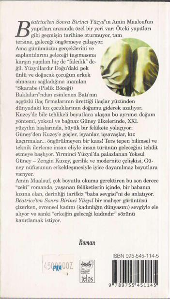

ANLATTIKLARIMDAN SONRA, DÜNYADAKİ FELAKETLERİN beni aşağı yukarı gitmek istediğim yere ulaştırdığını söylemeye cesaret edebilecek miyim?
Açıklıyayım: eskiden Clarence, emekliliğini, emekliliğimizi, bitmez bir dünya yolculuğu olarak düşlüyordu.
Yolculuk yapma tutkusundan arınmak için, günlerini oturarak geçirmeyi değil de, aynı ülkelere daha yavaş ve vakit, saat, not deften düşünmeden, keyif almak için bile herhangi bir zorunluluk duymadan, huzurlu gezintiler yapmayı düşünüyordu.
Olaylar, Doğu'ya ait düşlerini kırdı, hayallerini parçaladı, kaçış ona yasaklanmış oldu. Kendi durumu ve dünyanın durumu yüzünden. Tasarısının henüz bir anlamı olduğu günlerde, Clarence onlardan, korkunç günlerin akşamında söz ederdi. Bırakırdım gezinsin. O anlar onu, usulca belinden tutardım. Hareketsiz bir yolculuk yaparmışız gibi. Başım arkada, ışıldayan yüzüne bakar, hafif kır düşmüş saçlarını ve esmer, çıplak omuzlarını öper, hayal dünyasını asla yıkmaya kalkışmazdım.
Tabii ona karşı da çıkmazdım. Oysa emekliliğimizi bambaşka düşlemiştim; onunkisi tembellik ve gezginlik, benimkisi çalışkanlık ve yerleşiklik olacaktı. Savoie'daki samanlıkta bir mikroskop! Onu asla bu kapalı yerde kalmaya zorlamazdım, önce ben onu yollarda izler, sonra yaşlanınca, o benim kır evime gelirdi. Yazgı, bunlardan birini unutmamızı emretti, onunkisini!
Düşlerim nicedir Alplerin yakınlarında mesken tutmuştu; Clarence'inkiler onlara katıldı. Artık şimdi, her ikimiz de, Avrupa'nın damındaki bu bir çeşit rasathanede yaşamayı özlüyorduk. Belki de bu biçimde uzaklaşarak, yaşlanmakta olanların nihai gururu olan aklın, başımızda olmasını sağlayabilirdik.
Beatrice'in yüzyılının otuzuncu yılında, kütüphanemi Aravis'e taşıdım. Kitaplarımı, aletlerimi, böcek koleksiyonumu ve kışlık giysilerimi. Sayfiye evi böylece daimi ikametgâh oldu, geriye kalan mevsimler için.
Kente dayanamaz olmuştum. İnsanlar duvarlara yapışmış gibi, karanlık bakışlar, karanlık gözlerle, diplerinden sürtünüyorlardı. İkinci Dünya Savaşında geceler soğuk ve kömür sıkıntısı çekilirken de aynen böyle olmalıydı. Ama bugün ne savaş vardı ne de soğuk. Bıkkınlık vardı. Savaş olmadan, yenilmişliğin acı tadı vardı. Hiçbir ateşin ısıtamadığı kış, insanların içindeydi.
Ne insanları, ne sokakları tanıyabiliyordum. Bazen, kendi düşüncelerimi dinlerken sıçrıyordum. Korku, canavar doğurur.
Benim korkum katmerliydi. Kentli olarak, tanıdık olmayan her yüze, her kalabalığa kuşkuyla bakıyordum. Sokaktaki, gölgeleri beni korkutan insanları bir hareketimle kül edebilseydim... Bir kış akşamı, sokağın köşesinde, kaldırımda ateş yakmış bir grup genç gördüm. Eskiden olsa, hoşuma giderdi, onlarla şakalaşırdım. Oysa şimdi, onlarla karşılaşmamak için yol değiştirdim ve binama girmeden önce onlara uzaktan nefretle baktım. 1
Eve girdikten, zırhlı kapıyı üç kez kilitledikten sonra diğer korku, şu kararmış kentin beni getirdiği halden, insanlara ve dünyaya bakışımdan utanmam ve korkmam benliğimi sardı. İvedilikle uzaklaşmam, uzaklarda huzuru bulmam gerekiyordu. İnsanlardan uzakta olduğumda, belki onları sevmeyi yeni baştan öğrenebilirdim.
Son zamanlarda beni Paris'e bağlayan tek şey, Beatrice, Florian ve Morsi'ydi. Kaçacaksam, onlarla birlikte kaçmalıydım.
Aslında, en yakınlarım da olsa, insanları kendi yollarında gitmeye bırakmak, başkalarına saygı göstermek gibi bir eğilimim vardır, bu benim için kutsal bir ilke olmuştur. Ancak bu kez, bundan vazgeçerek ısrarcı oldum, kızıma bir karar verdirebilmek için sevginin ve korkunun bütün tellerini çaldım. Cenevre'de bir iş bulması için ailesi Morsi'ye baskı yapıyordu. O zaman Aravis'e bir saatlik yerde olacaklardı. Sonunda kabul ettiklerini görünce, rahat bir nefes aldım. Ve ancak yanıbaşıma geldiklerinde, yaşama sevincime kavuşarak çalışmaya koyulabildim.
Bu tanıklık eden kitabı yazmaya henüz niyetli değildim. Aileme ayırmadığım zamanları mikroskobumun ve kınkanatlılar koleksiyonumun başucunda geçiriyordum. Bazen, çekmecelerimde, Andre Vallauris'in bir mektubunu ya da kesilmiş veya kopya edilmiş bir makaleyi bulduğumda, okumakla fazla oyalanmadan, çekmeceme yerleştiriyordum.
Yazar olma düşüncesi ne zaman aklıma geldi? Belki de sadece, Beatrice'in doğduğu yıla ait kalın ve boş bir defteri bulduğum gün. Bu nesne birkaç hafta masamın üzerinde öylece durdu, ne atabiliyor, ne kayırabiliyordum. Sonra günün birinde, elimde bir dolmakalem, sayfalarını çevirmeye ve ilk satırları karalamaya başladım.
Bir süre sonra, kimseye bir şey söylemeden (çünkü belki asıl işim olan böcek bilimciliğinden bu denli uzak bir işi sonuçlandırabileceğimden emin değildim ve o yüzden Clarence'a bile açılamıyordum) saatlerce kapanıp sayfalarca anılarımın temposunda yazı yazıyor ve bölümlerini birbirine bağlamak için alfabe sırasını A'dan Z'ye kadar kullanıyordum.
Artık sonuna çok yaklaştım. Bu denli ağır olacağını tahmin etmediğim bir yükten kurtulacağımı hissediyorum. Bu metin günün birinde yayınlanır mı? Buna ilgi gösterecek biri bulunur mu? Kaç yılda? Bu artık benim işim değil diyesim geliyor. Yazgısı ne olursa olsun, benim rolüm bitiyor. Denize bir şişe atılırsa, birinin onu bulması istenir, ama yanıbaşında yüzülmez.
Üstelik, utanmadan diyebilirim ki, şu andaki tek tasam, ailemi dünyanın karışıklıklarından, olabildiği kadarı ile şiddetten ve cinayetten korumak ve minicik krallığım Aravis'te yaşama sevincini tatmaktır.
Etkinliklerle dolu günler, Savoie'daki sığınağımı, oturulabilir bir yer yaptı. Benim indimde burası, Ararat dağının (bildiğiniz gibi Nuh'un gemisinin konduğu Ermenistan'daki dağ) boyutlarını kazandı. Dünyada korku, Tufan'daki su gibi yükseliyor, ıslanmayanlar için görüntü, muhteşem olabilir.
Muhteşem mi? Bu sözcük, insana alay gibi geliyor.
Her trajedya muhteşemdir, her kıyamet de muhteşemdir... ama şurası da doğru ki, yaşlılığımın yüzyılında, hayran kalabileceğim başka şeyler bekliyordum.
Kaç kez, işin bu noktasına nasıl geldiğimizi kendi kendime sordum. Bundan önceki sayfalarda, olayları, izlenimleri, nedenlerin belirtilerini anlattım. Sahneden, acele etmeden ama esef de etmeden ayrılmaya hazırlanırken, daha hâlâ, bir an için yazgının çizgisi değiştirilebilir ve insanların düşlerine daha uygun bir ortama çekilebilir miydi diye soruyorum. Tanıklığımı ve son yıllardaki yazıları istediğim kadar yeniden okuyayım, yanıt bulamayışım bazen can sıkacak biçimde devam ediyor. Olanlar, önlenebilir miydi? Sanırım hayır, başka yolların olabileceğine inanmaktan kendimi alamıyorum.
Tamamlanmış, bitmiş gelecek zamanları sık sık düşünüyorum. Bazen, günlük gezintilerim sırasında, altmış yıl geriye, Beatrice'in yüzyılının başlamasından gerilere gidiyor ve üyesi olduğum sinir bozucu insanlığın izleyebileceği yolları hayal etmeye çalışıyorum.
O zaman, bir gezinti süresince, bambaşka bir dünya yaratıyorum. Özgürlüğün ve refahın, suyun üzerindeki dalgalar gibi usul usul yayıldığı bir dünya. Tıbbın, tüm hastalıkları yendikten ve salgınları püskürttükten sonra, yaşlılığı ve ölümü geriletmekten başka kaygısı kalmayan bir dünya. Karanlığın son lekelerinden arınmış bir dünya. Evet, barışını kurmuş, yüce gönüllü ve fethedici, gözleri yıldızlara, sonsuzluğa dikili bir insanlık. Böyle bir insanlığın üyesi olmaktan gurur duyardım.
Yakın bir gelecekte, gezintimden dönmeyeceğim. Biliyorum, bekliyorum, hiç de korkmuyorum. Aşina bir yoldan gideceğim. Düşüncelerim, yakalanmadan, zıplayıp duracak. Birden, sıçramalarım yüzünden yorgun, düşmüş başı dönmüş, coşmuş olan kalbim sekmeye başlayacak. Bildiğim bir meşe ağacına yaslanmaya çalışacağım.
Orada, öyle azami bir huzur ve uyuşukluk içinde, bir an için hayallerle en değerlisine sahip olacağım: dünya, tanıdığım biçimiyle adi bir karabasan gibi gözlerimin önüne gelecek ve gerçek görüntülere, düşlerin dünyası bürünmüş olacak. Her an, biraz daha inanmaya başlayacağım. Son kez bakışlarımın sarmaladığı görüntü bu olacak. Bir çocuk gülümseyişi, dağın rengini almış olan sakalıma konacak ve huzur içinde gözlerimi kapatacağım.
